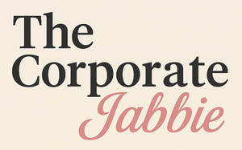

Trade Mark Journal No.2025/018 2 May 2025
UK00004188892 14 April 2025 (35,41,44)

- Class 35
- Career advisory services (other than education and training advice); Business management; Business administration; Business promotion; Business management services; Business consultancy services.
- Class 41
- Education; Vocational education; Health education; Education and training; Education and instruction; Services of schools [education]; Education services; University education services; Education, teaching and training; Vocational education and training services; Training and education services; Education and training services; Education and instruction services; Provision of education courses; Career counseling [education]; Provision of training and education; Provision of education and training; Higher education services; Providing of education; Physical education; Education academy services for teaching languages; Entertainment, education and instruction services; Medical education services; Education information; Information (Education -); Providing continuing medical education courses; Education services relating to health; Educational services provided by institutes of higher education; Education and training services in the field of occupational health and safety; Education and training in the field of occupational health and safety; Education information services; Education services relating to medicine; Educational and teaching services; Career counselling [training and education advice]; Education in the field of occupational health and safety; Career advisory services (education or training advice); Adult education services relating to pharmacy; Education services relating to industry; Education services relating to pharmacy; Educational and training services relating to healthcare; Education and training in the field of business management; Providing education courses relating to the travel industry.
- Class 44
- Vaccination services; Provision of information relating to vaccination for overseas travel; Hepatitis screening services; Drug screening for medical diagnosis and treatment; Health screening; Medical testing services relating to the diagnosis and treatment of disease; Health clinic services; Health clinic services [medical]; Medical screening; Analysis of human serum for medical treatment; Medical and healthcare clinics; Medical and healthcare services; Medical services; Medical examination; Medical examinations; Medical assistance; Medical nursing services; Medical clinic services; Ambulant medical care; Medical diagnostic services; Medical treatment services; Medical consultations; Medical testing; Medical information; Rental of medical and health care equipment; Medical health assessment services; Medical evaluation services; Mobile medical clinic services.
ONA CAPITAL LIMITED